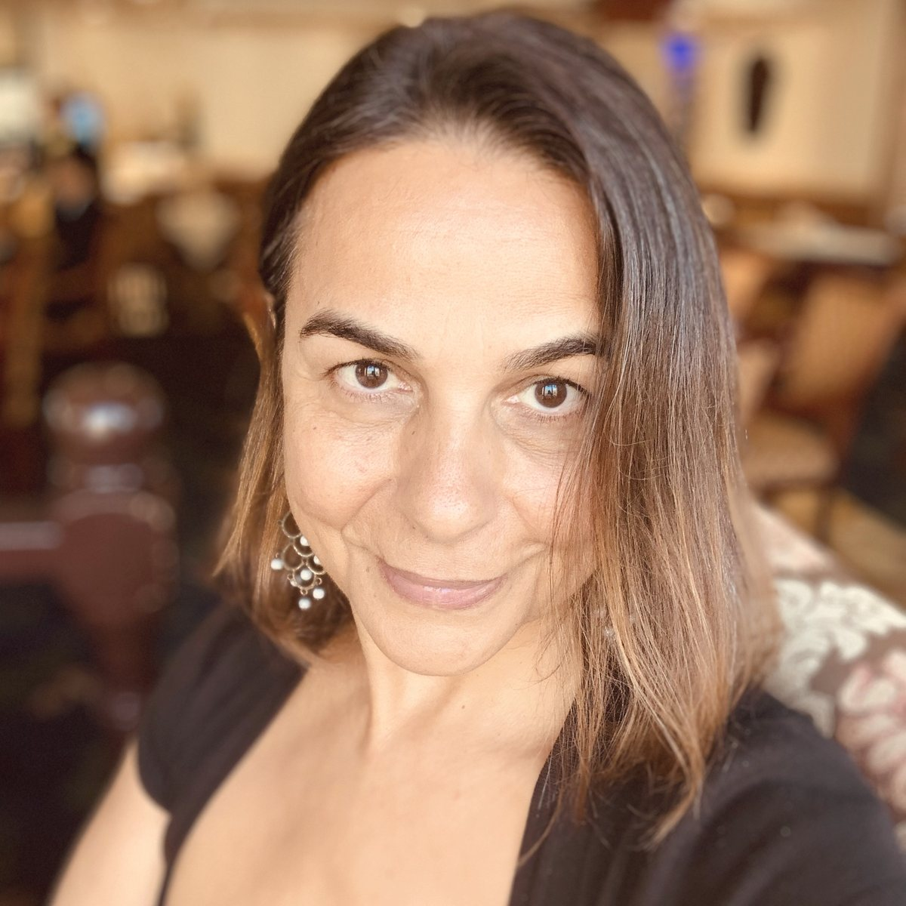
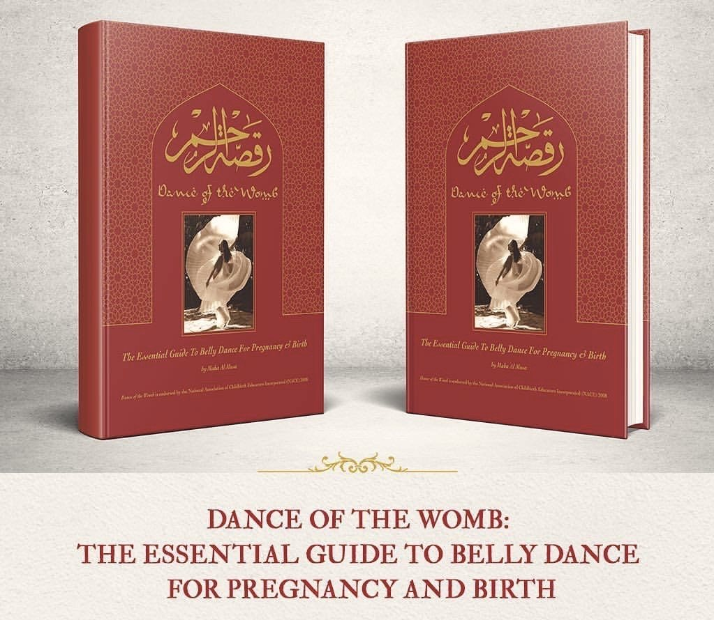
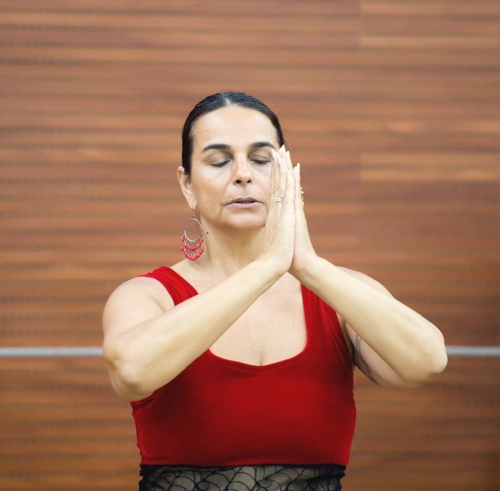
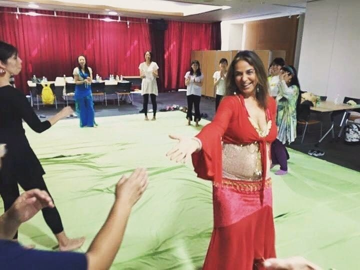
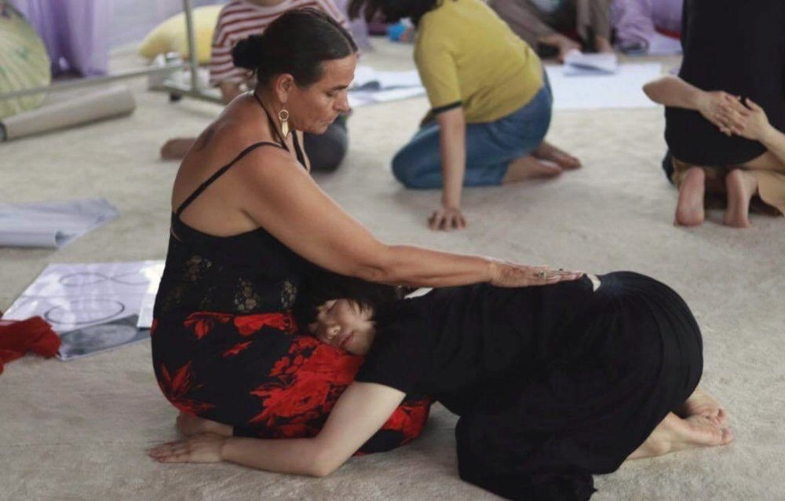

In 2023 I took her class in China.
It was a workshop on feminine energy and sexuality. When it ended, I knew I could not simply go home.
On 23 November, in her hotel room, I made her an invitation: come to Taiwan.
At the time I had no team, no venue and no budget. I had an unfinished proposal and one very clear instinct: the Chinese-speaking world needed to hear what she had to say.
Later, she really came.
Who she is

Photo: Maha Al Musa／EmbodyBirth™
Maha did not begin from the position of a "natural birth advocate." Her starting point is much further back: a village in Palestine.
Her grandmother, Aminah, gave birth to nine children in a family birth hut in the village of Al-Qubab in Palestine.
The whole EmbodyBirth™ teaching grew from her roots in Palestine and Lebanon, and her grandmother was the inspiration. In the words of her own workshop brochure, EmbodyBirth™ is "a reverent honouring and preservation of Maha's Palestinian/Lebanese birthing roots."
Maha's third child, a baby girl born at home in a water and lotus birth when Maha was 46, was named Aminah.
The first time I understood that thread, I got goosebumps.
From nine children in a village birth hut to a baby born in a birth pool at home in Australia: a whole century apart, two continents, one diaspora. And she joined them with a name.
Maha Al Musa | Profile
More recently, The Awakened Woman
Endorsed by Michel Odent, Sheila Kitzinger, Sarah Buckley and Christiane Northrup
That list of endorsements is serious: Odent, Kitzinger, Buckley and Northrup are foundational figures in the gentle-birth lineage.

Photo: Maha Al Musa／EmbodyBirth™
The word she gave me: expansion
If I could keep only one thing from everything she teaches, I would keep this.
She doesn't say contractions.
She says expansions.
"…the physical, emotional, energetic, spiritual body needs to expand – so instead of using the word contractions in this way we rather say expansions – to remain flexible and open."
— Maha Al Musa, from a lecture to midwives in China
Name the same bodily sensation with a different word, and the experience changes.
The Chinese word for contraction carries both "pain" and "wave" in it. It frames the sensation as something that arrives in waves, to be endured. "Expansion" describes the other side of the same event: the body is opening.
This is not positive thinking. The cervix really is opening and the pelvis really is giving way. "Expansion" is closer than "contraction" to what is actually happening at that moment.
I use this word now when I accompany births. I have seen mothers' shoulders drop the second they hear it.
The diamond in her whole teaching
A mother's body, your body with your baby, knows how to give birth.
— Maha Al Musa
Maha calls this a simple yet powerful diamond that runs through everything she teaches.

Photo: Maha Al Musa／EmbodyBirth™
The whole of EmbodyBirth does not teach you how to give birth. It wakes up and unlocks the knowing that is already in your body. Its subtitle says the same thing: Unlock and Awaken Your Ancestral Womb Wisdom.
Three core values grow from this diamond:
Maha describes the course as an invitation to find a space for reflection and to discover your own inner expertise, rather than a manual from experts telling you what to do.
Connect with your inner intuition first, then turn outward. After you become a mother you will receive a flood of mixed advice. With an inner anchor, the outside voices won't sweep you away.
She hopes you will find, deep inside yourself, the same place of refuge that she found in herself. Take only what you need and what resonates.
She supports necessary medical intervention, because it saves lives. What matters most to her is women's choice and women's voice.
This keeps her from being an opponent of medicine. What she pushes is no particular way of giving birth. She returns the decision to the person who is giving birth.
BellydanceBirth®: first, give the name back
This is her most distinctive contribution, and the most often misunderstood.
It is not belly dance as the West understands it.
It comes from Maha's Middle Eastern heritage, under the original name raqs al sharqi (Arabic for "dance of the East"). The term "belly dance" was coined in the West and narrowed into a show to please the male gaze, performed for outsiders. That is not the original Eastern idea.
In the Middle East this was the fertility dance of weddings. In some villages, when a mother went into labour, the women of the tribe would gather around her, dance with her, and call out in high-pitched trills (ululation), holding her with their energy so she knew: I am never alone, my circle of sisters fully supports me.
BellydanceBirth® grew from this piece of herstory.
So it teaches no choreography and no set steps. It teaches improvised, grounded, downward movements. The workshop brochure puts it this way: "We do not learn choreography nor a set of steps but rather tap into the sacred childbirth body to reclaim our own voices with our babies."

Photo: Maha Al Musa／EmbodyBirth™
A body rule I often use
All horizontal movements relax the uterus.
All vertical movements stimulate it.
— A basic principle of BellydanceBirth®
The masculine expression centres on control and direction, mostly vertical, technical and performative. The feminine expression is horizontal, rooted in the earth, soft, round and flowing, and that is what suits pregnancy and birth.
Her invitation has almost no threshold:
Do you have a heartbeat? One, or two, maybe three! Yours and your baby's. This is your musical or rhythmic beat. You can dance!
— Maha Al Musa, from a lecture to midwives in China
When she demonstrated this she was 46 and 34 weeks pregnant with Aminah.
Her archetype story
In 1996, in the third trimester of her first pregnancy with Kailash, Maha saw in a shamanic guided meditation a woman sitting cross-legged, floating, with a long grey braid and a gentle face. The woman said to her slowly:
Let go, let go, let go.
— The woman in the vision
She followed her breath and loosened everything she was gripping. One message rose up through her heart and womb: my baby and I are one, I will be the one to bring this birth, and I need to connect with my inner strength.
She describes it as waking the "sleeping lioness within." She began clearing the "emotional debris" left by her childhood, her parents, old relationships and social judgement.
But the story did not follow the script.
Kailash arrived six weeks early, naturally and without intervention. His lungs had not yet developed, so twelve hours after birth he was flown by helicopter to a hospital in a big city.
Because of the deep preparation she had done in pregnancy, she could stay calm and receive this dramatic arrival. Her conclusion became a sentence I often use to comfort mothers:
Acceptance is the wisest medicine.
When things don't go as planned.
— Maha Al Musa
This first birth turned her from her "girl self" into a "fully embodied instinctual mother."
Her vocabulary
These are her signature phrases. I use them constantly in my work and writing, so I have collected them here.
| Phrase | Meaning | In one line |
|---|---|---|
| Expansions (not contractions) | The body expanding | The uterus contracts, but the whole body needs to expand and stay flexible and open. |
| Ancestral Womb Wisdom | Wisdom of the womb passed down through generations | The knowing of birth is not learned. It is already in your bloodline. |
| Birth is not an emergency, it is a spiritual emergence | Birth as a spiritual emergence | Returns birth from a medical event to a ritual of transformation. |
| Inner-to-outer orientation | Turning from inside outward | Trust inner wisdom first, then consult the outside world. |
| Circle of sisterhood | Sisterhood circle | The energy field of women gathered around the birthing woman, holding her together. |
| Acceptance is the wisest medicine | Acceptance as the wisest medicine | A steadying line for when birth doesn't go to plan. |
| "What else is possible?" | Her favourite question | An invitation to openness and imagination. |
Two years in Taiwan
What came out of that invitation in November 2023 was this, including one event that never happened.
November 2023
Her workshop on women's energy and sexuality in China. On 23 November, in her hotel room, I made the invitation.
June 2024
Two-day workshop: Fundamentals of EmbodyBirth™ & BellydanceBirth®
The Fundamentals of EmbodyBirth™ & BellydanceBirth® – A Path to Sacred Birth Wisdom. It covers four themes: birth philosophy, psychology, physiology and body practice.
June 2024
Awakened Woman Taiwan One Day Workshop
August 2024
The advanced online educator certification begins
May 2025
A group of Taiwanese students completes the EmbodyBirth Educator certification, and this lineage has its own seeds in Taiwan
2025
A 3.5-day deep intuition workshop on the Oracle Path of the Woman: prepared, but never held.
The copy, the sign-up form and the budget were all done. The themes: releasing the "good girl" bind, healing shame around sexuality, awakening womb wisdom, and using the body as an oracle.
I keep it here because an event that didn't happen is part of the record too.
2026 to now
Maha's recent focus has clearly moved to Sacred Menopause, which her website and Instagram now place alongside Sacred Birth.
From pregnancy and birth to the whole arc of a woman's life.
Organising events is tiring. Finding a venue, negotiating a budget, building a team, arranging translation, printing handouts, buying materials, dealing with last-minute problems: in those two years I did many things a doula shouldn't have to do.

Photo: Maha Al Musa／EmbodyBirth™
And not every event worked out. The one in 2025 got as far as copy, sign-up form and budget and still never happened.
But I have never regretted it. The words that were truly spoken stay with the people who heard them, and the event that never happened taught me other things.
The honest part: where the evidence is
I like Maha very much. Because I like her, I want to be clear about this.
The mechanism behind it has strong evidence. Free movement and upright positions in labour: two Cochrane systematic reviews, 57 randomised trials in total, over 14,000 women. The first stage of labour is shorter by about 1 hour 22 minutes on average, and caesarean and epidural rates are lower.
But belly dance as a specific form has never been studied on its own. On PubMed there is only a 2005 narrative article in a practice magazine, with no control group, no outcome data, and zero randomised trials.
So the honest statement is: it packages evidence-based mechanisms (movement, upright positions, pelvic mobility) into a form that women are willing to do, can keep doing, and enjoy.
That value is real, and it is not small: even the most effective advice is worth nothing if you can't keep doing it. But it is a different claim from "belly dance has been shown by research to shorten labour," and that second sentence must not be written.
The full summary is in Many ways of giving birth: 12 options and the state of the evidence (in Chinese).
What she gave me
The most practical gift is that word: expansion.
The deeper gift is something else.
Maha showed me that a person can turn what lives in her own bloodline into a gift for the world. She didn't learn someone else's method and resell it. She went back to her grandmother, her village and her diaspora, and from there grew a whole teaching.
That was a big reminder for me.
I am Taiwanese, I live in Japan, and I accompany births in both places. I used to think of this "not fully belonging anywhere" as a flaw.
She showed me that the meeting point is exactly where something new can grow.
What else is possible?
— Her favourite question, which I have kept
How to find her
Her content is mostly in English. Her recent focus is Sacred Menopause, alongside Sacred Birth. If what you care about now is the other end of life, she has something there too.
Note: the old domain mahaalmusa.com.au no longer works (no DNS record); the current domain is .com. Also, Dance of the Womb is hard to buy at the moment. If you want to approach this method, the online course is a more practical way in than looking for the book.
My teachers
This is a series, ordered by how deeply each person has influenced me. On this path I have been shaped by many people, some teachers and some fellow travellers. I want to write about them one by one, because what they gave me should not stay only with me.
More to come.
Questions people ask
Who is Maha Al Musa?
Maha Al Musa is a Palestinian/Lebanese Australian birth mentor who has worked in international birth education since 1997. She is the founder of EmbodyBirth™ (conscious birthing) and BellydanceBirth® (Dance of the Womb). She wrote the world's first book on belly dance for pregnancy and birth, Dance of the Womb, endorsed by Michel Odent, Sheila Kitzinger, Sarah Buckley and Christiane Northrup, among others. All three of her children were born naturally, and her youngest was born at home in a water and lotus birth when she was 46.
What is EmbodyBirth?
EmbodyBirth™ is a birth preparation system built by Maha Al Musa. Its core belief is that a mother's body, and your body with your baby, knows how to give birth. It has four modules: birth philosophy, birth psychology, birth physiology, and BellydanceBirth® as the body practice. Its tone is an invitation, not a manual. The aim is to wake the knowing a mother already has, not to teach her how to give birth.
Why "expansions" and not "contractions"?
Maha doesn't use the word contractions. She says expansions. In her words, the uterus does contract, yet the physical, emotional, energetic and spiritual body needs to expand, so she says expansions to remain flexible and open. It is a reframing through language: name the same bodily sensation differently and the experience changes. And "expansion" is closer to what is actually happening: the cervix is really opening and the pelvis is really giving way.
Is BellydanceBirth just belly dance?
It is not belly dance as the West understands it. It comes from Maha's Middle Eastern heritage, under the original name raqs al sharqi (Arabic for "dance of the East"). The term "belly dance" was coined in the West and narrowed into a show to please the male gaze. In the Middle East it was a fertility dance at weddings; in some villages, when a mother went into labour, the women gathered around her, danced with her and called out in high-pitched trills, holding her with their energy. BellydanceBirth® teaches no choreography or steps. It teaches improvised, grounded, feminine movement.
Is there scientific evidence for this method?
Look at it in two layers. The mechanism behind it, free movement and upright positions in labour, is supported by two Cochrane systematic reviews with 57 randomised trials and over 14,000 women. But belly dance as a specific form has never been studied on its own: PubMed has only a 2005 narrative article in a practice magazine and no randomised trials. The honest statement is that it packages evidence-based mechanisms into a form women are willing to do and can keep doing.
Has Maha been to Taiwan?
Yes. In June 2024 I hosted her two-day workshop on the Fundamentals of EmbodyBirth™ & BellydanceBirth®, plus an Awakened Woman one-day workshop. In 2025 a 3.5-day deep intuition workshop, the Oracle Path of the Woman, was planned with copy and sign-up ready, but was never held. An advanced online educator certification began in August 2024, and in May 2025 a group of Taiwanese students completed the EmbodyBirth Educator certification.
Is anyone teaching this in Taiwan now?
Yes. In May 2025 a group of Taiwanese students completed the EmbodyBirth Educator certification, and I am one of them. I bring this view into my doula and birth education work. See my doula support (Chinese) or talk to me directly.
Sources. What this article says about Maha Al Musa's life, method and vocabulary draws mainly on her EmbodyBirth™ online course materials (bilingual Chinese–English: Introduction 1 & 2 and the Module 4 introduction), EmbodyBirth Online Teacher Training Part 2, the official bilingual brochure of the 2024 two-day workshop in Taiwan, and the official copy of the 2025 Oracle Path workshop. The dates and content of the Taiwan events come from my own hosting records, including the 2025 event that was prepared and never held.
On her heritage. The phrase "Palestinian/Lebanese" comes from the original wording of the 2024 Taiwan workshop's bilingual brochure ("Maha's Palestinian/Lebanese birthing roots"). Descriptions of her background online vary; this article follows her own materials.
On the evidence. Full references for the Cochrane reviews are at the end of Many ways of giving birth (in Chinese). The finding of zero randomised trials for BellydanceBirth® itself is based on a PubMed search (August 2026).
On Maha's words. Quotes that appear in English are from her own materials: the 2024 Taiwan workshop brochure, her lecture to midwives in China, and her course. Where I only have her words in Chinese translation, I have paraphrased rather than present a translation as her exact wording.
This article is a personal profile and learning record. It is not medical advice. The ways of giving birth mentioned each have conditions and risks; please discuss them directly with your doctor or midwife.